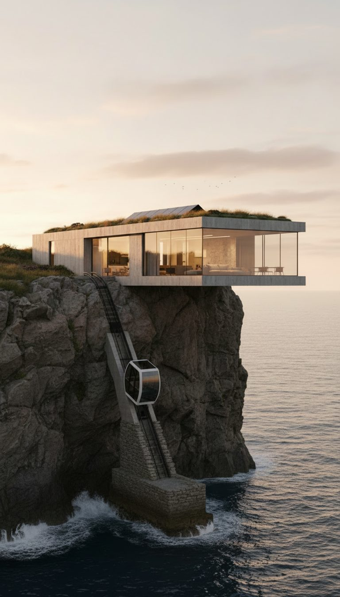
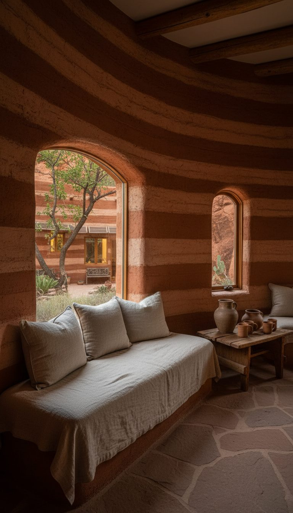
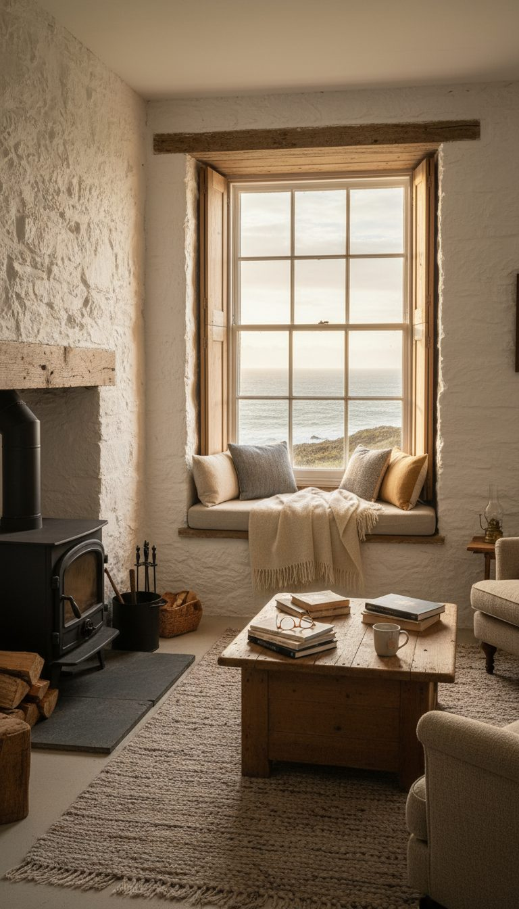
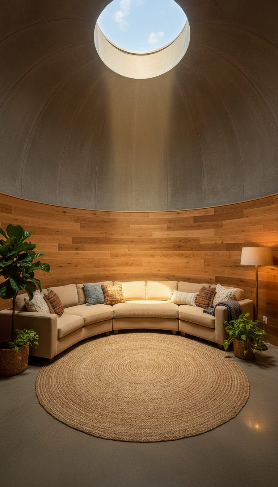
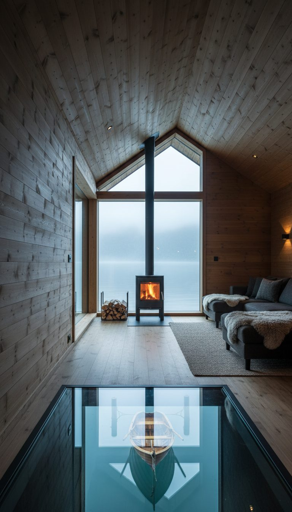
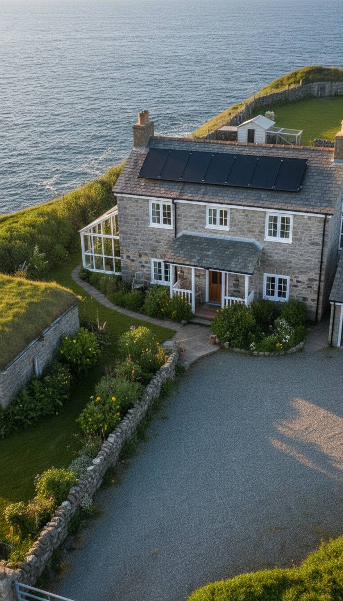

Guide
Quiet security, softly furnished: 9 ideas from our concept homes
Lock & Linen homes are AI-rendered concepts, not real listings. What they share is a mood: privacy handled by landform and a single clear entry, then interiors finished in linen, timber, wool, and soft light. Here are nine ideas you can steal for a mood board — each one links to the full story.
Nothing on this page is a product claim or a security-performance guarantee. It is design inspiration from fictional places.
Idea 1 · AI concept
One dock as the only way in
A single teak dock and boat lift set the perimeter without looking like a fortress — quiet access control rendered as coastal living.

Idea 2 · AI concept
A funicular instead of a driveway
The Cliffside Glass House uses one clifftop car as the only land entry. Soft oak and linen wait inside the cantilever.

Idea 3 · AI concept
Earth walls that disappear into rock
Rammed earth flush with red canyon stone, a planted roof, and a fig courtyard — privacy by terrain, softness by material.

Idea 4 · AI concept
One gravel causeway to the keeper's house
A restored headland light with wool throws and a stove. The causeway is the filter; the interior is the refuge.

Idea 5 · AI concept
A flush hatch under a prairie farmhouse
Ordinary above, cylindrical oak living rooms below. Security as a quiet layer, not a showpiece.

Idea 6 · AI concept
Boat bay under the living room
Dark timber, sheepskins, and a glass floor over the boat. Arrival by water feels intentional, not theatrical.

Idea 7 · AI concept
Canyon walls as the compound edge
One road, one gate, cliffs on three sides. Raised beds and a root cellar keep the mood domestic.

Idea 8 · AI concept
Headland compound above the surf
Sea cliffs on three sides, one lane in, wool throws after the wind. Fortification read as geography.

Idea 9 · AI concept
Granite behind, one switchback road
Stone-and-timber under the peaks. Soft evenings, solar roofs, and a single approach that keeps the bench quiet.